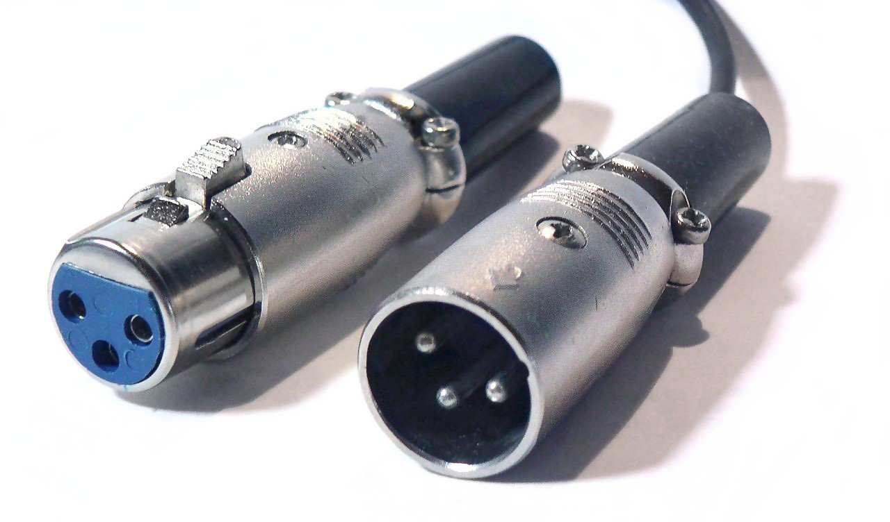
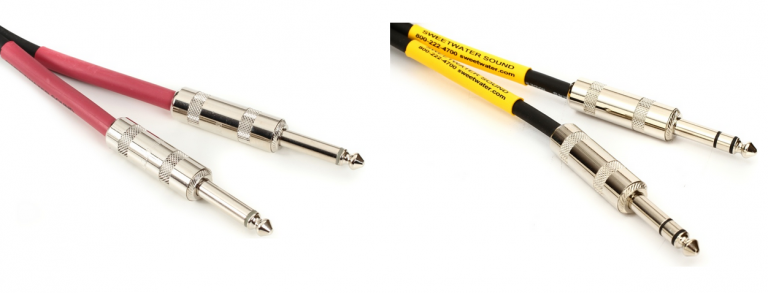
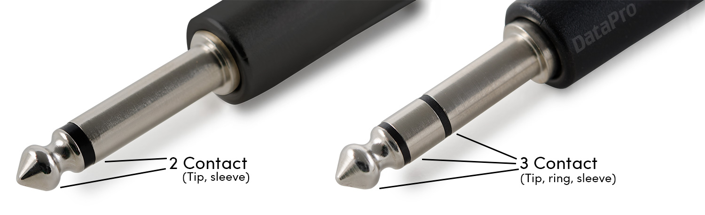
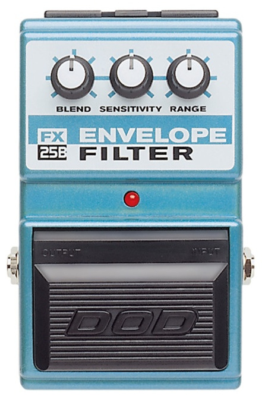
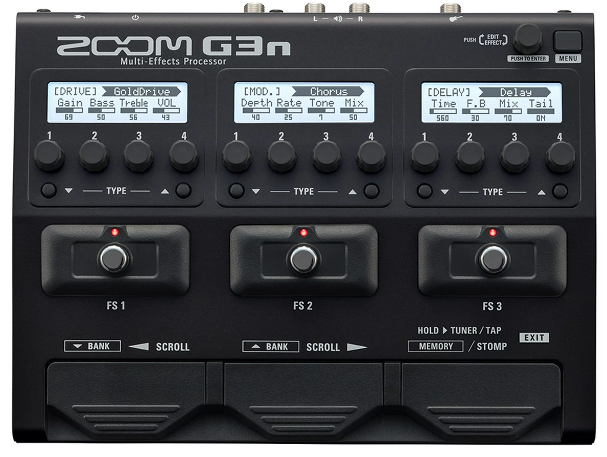
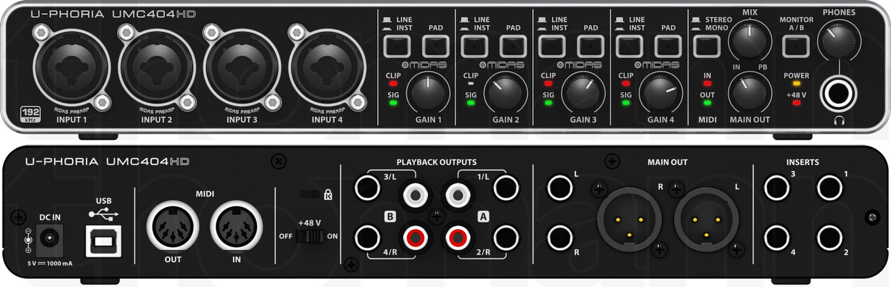
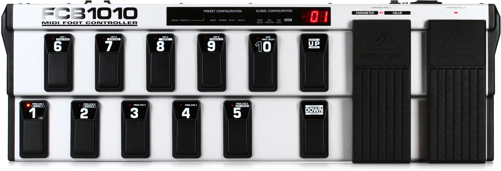
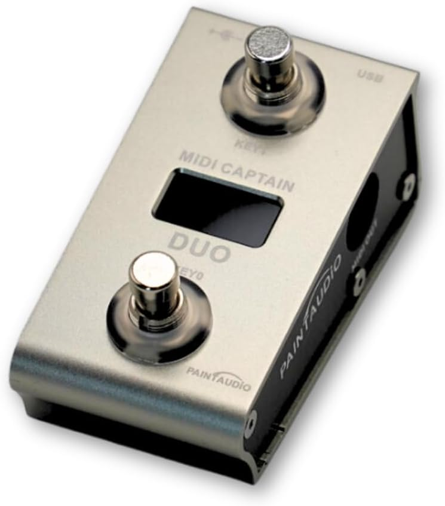
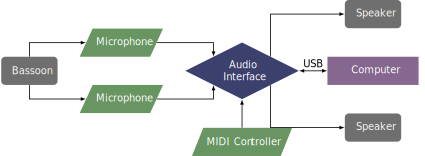

The flexibility of interactive electroacoustic music brings added complexity for performers. The goal of this page is to remove some of the apprehension performers may feel towards the new facets of the performance system. One way to view this system is to divide it into three parts: input, processing, and output. Each part has many variations, but these three parts are the basic foundation to all interactive electroacoustic music.
The input phase involves getting the sound of the bassoon (or any other instrument) to the computer or effects pedals so that the computer can do fun things to the sound. This basically means using a microphone of some sort, whether that is a traditional microphone or an electric bocal.
There are many different types of microphones that use different methods to capture sound and transmit them elsewhere. The main types are dynamic microphones, condenser microphones, and ribbon microphones. All of them can work. Many performers prefer using condenser microphones for acoustic instruments, as it tends to have the smoothest frequency response (see microphones for a discussion about frequency response). Another factor in microphone choice is the polar pattern, which describes the direction from which a microphone picks up sound. The cardiod pattern is often what is desired in live performance, as it reduces feedback and unwanted sounds from entering the performance system.
So for using traditional microphones, we usually want a good quality cardiod condenser or dynamic microphones. A common setup is to use two microphones, one that is pointed near the bell to capture the low end frequencies, and another that is pointed towards the middle of the bassoon at the tone holes.
An alternative form of capturing the bassoon sound is to use an electric bocal. This tends to work best with effects pedals, but can also work with computers. It works by listening to the sound from inside the bocal instead of what is coming out of the resonance of the rest of the instrument. A hole usually has to be drilled in the bocal with this approach. I like to use this whenever I can, as it basically eliminates the problem of feedback. But the sound is different. For some pieces, this isn't a problem as the sound is going to be changed anyways.
Until recently, the Little Jake pickup was the best option for electric bocals. But with the passing of Trent Jacobs I'm not sure exactly what the future will hold. The company Piezo Barrel makes a pickup that is designed for clarinet barrels, saxophone mouthpieces, and others. I know it has been used with the bassoon, but I don't have any experience with it. Another promising option is the IntraMic. It's still in development, but Paul Hanson is already using one. The advantage of the IntraMic is that you don't attach it to the bocal and you don't have to drill a hole in it. But it is expensive, around $800. With any of these options, there is some sort of a preamp that boosts the signal before going into other devices.
Regardless of which method for capturing the bassoon is used, you need some sort of cable that connects to the computer. Microphones commonly use what is called an XLR cable.

XLR Cable
Electric bocals use a 1/4" cable that is the same on both sides.

1/4" Cables
There are actually two types of 1/4" cables, balanced and unbalanced. The difference is in whether there is a ring in the connection. Balanced cables are often called tip ring sleeve or TRS cables, while unbalanced are just tip sleeve or TS cables. Effects pedals often use TS unbalanced connections, while other hardware tends to use the TRS balanced connection.

Balanced versus Unbalanced Connections
Now we move to the processing stage of the system. Our microphones are capturing the wonderful sounds of the bassoon, but nothing is happening yet. We haven't plugged in our cables to anything that will process the sound. Here is where we branch into two paths: effects pedals versus personal computers.
Let's start with effects pedals. As I said earlier, it is easiest to use an electric bocal with effects pedals. Part of the reason is that electric bocals use cables that effects pedals use as input. Nearly all guitar effects pedals use an unbalanced 1/4" connection. While there is a huge variety of effects, most of them fit into the broad categories of distortion and its cousins overdrive and fuzz, modulation effects featuring flangers, phasers, and pitch shifting, delays that include echoes, reverb, and loops, and filters like wah pedals and envelope filters.
You can find individual stompboxes that basically hold one effect, or bigger units called multi-effects pedals. Some musicians prefer stompboxes because they can use an exact distortion pedal they like and create their own pedalboard with their personal choice of effects. They also are cheaper and can be purchased gradually as you need them. Multi-effect units on the other hand are great because you get lots of effects in one device, but you might not have quite as much control over the effect or you might not like the tone of some of the effects. They are also more expensive as an initial cost, although buying a hundred stompboxes to replicate all the effects in a multi-effects pedal would be more expensive, but most people don't need that many effects. In fact, for most bassoon music you can do a lot with just a good delay, distortion, and octave pedal. It mostly depends on the repertoire you want to play and what it requires.

Stompbox Pedal

Multi-effects Pedal
Once the sound goes into the effects pedals, the effects chain will do its thing and get the sound ready for output. Effects are often turned on or off by stepping on a switch. They could be small metal ones or big plastic buttons. If you have to change multiple stompboxes at once, you probably want to be sitting down in your performance, or hope you have some rests so you can hit multiple buttons. Multi-effect units often simplify this with presets, and changing the preset with one footswitch can change all of the effects at once. After the sound has passed through all of the effects in the chain, it then goes to the output stage. For a deeper look at effects pedals, see the effects pedals page.
Let's move to the other branch of computer-based processing. Computers don't have microphone ports or 1/4" ports, so we need something that acts as a bridge between our cables and the computer. The easiest method is to use an audio interface. Simply put, an audio interface lets a computer hear what a microphone captures and also provides outputs from the computer that can connect to a speaker. Interfaces differ in the types and number of inputs and outputs, ranging from a basic 1 input 2 output interface to larger units that can handle 20 inputs and outputs. Most of the time we only need two or three inputs. For outputs, two is often enough, and even pieces that use more can often be condensed down to a two-speaker version. Not many pieces use more than four outputs. Almost all interfaces connect with a computer through a USB port, and that is how the computer gains access to all of the other parts of the system.

Audio Interface
So now that the computer can hear what we are playing, it becomes an active part of the system. Composers use programming languages to create programs or patches that can do all sorts of things. A small number of examples are playing fixed media sections on cue, adding effects to the sound like effects pedals do, and creating an improvisation partner. Fortunately, we as performers don't need to be trained programmers to play the music. There are three main programs or languages that most composers use to create these patches: Max/MSP, Pure Data, and SuperCollider. Max/MSP is by far the most popular. Pure Data is very similar to Max and is open source, which means it is free to use. If you're interested in experimenting with audio programming, PD could be a good way to start without paying for Max. SuperCollider is also open source, but takes a more traditional programming language approach of typing code. It is very powerful, but tends to be more intimidating to non programmers. Now I just mentioned that prospective composers interested in Max/MSP would have to pay for it. Fortunately, performers don't have to pay for the program. Basically the way it works is anyone can use Max for free to open patches and run them, but if you want to create new patches or save changes to other patches, you need to pay for a license to the program. For more details about these different programs, see the software page.
After a program is properly configured to the hardware of the performance system and is actively listening to the performance, there is often a need to tell the computer when it is time to do something. While we are playing bassoon, we usually do not have free hands to press buttons on the computer or hit specific keys on the keyboard. It is often possible to have a separate performer that controls the computer—and may make first performances easier for newcomers to the genre—or to push a pedal that sends a MIDI message to the computer.
MIDI stands for Musical Instrument Digital Interface, and was developed in the 80s to communicate between different musical devices. MIDI does not actually contain sound—even though that is usually the desired result—but sends messages like "play this note for this amount of time," or "change this control value to this number." If you've ever used a keyboard to input music in Finale, Sibelius, or Dorico you have used a MIDI device. The keyboard sends MIDI messages when keys or buttons are pressed and the program responds by putting the associated note. We essentially do the same thing with Max, PD, or SuperCollider. In fact, you probably could use that same MIDI keyboard to control the computer, but it's often not much easier in live performance than pushing keys on the computer keyboard. It is usually easier to use MIDI foot pedals that can be programmed to do the same thing.


MIDI Foot Controllers
By far the most common MIDI message is sending what's called a continuous control message. Most patches will respond to sending value 127 to controller 64, which is traditionally the equivalent of pushing the sustain pedal on a MIDI keyboard. MIDI pedals can use a traditional MIDI cable, but more devices are using USB to transfer MIDI information. MIDI controllers can connect directly to the computer through a USB connection, or to an audio interface through its MIDI ports.
So to recap the processing phase for pieces with computer processing: an audio interface brings in the signal from the microphones so the computer can hear it. Then the computer uses software, usually a Max/MSP patch, to do something when the performer tells the patch to do its thing. Often this is done by pushing a foot pedal, not unlike using effects pedals. Then the program will do whatever the composer designed it to do, and it brings us to the output phase of the system.
The two branches of the processing phase continue in the output phase. This is where we actually get to hear the result of the whole system.
Returning to the effects pedals branch, it is most common to use a guitar or bass amplifier. Each pedal has at least one 1/4" output jack that will be connected to the input of the amp by a 1/4" TS cable. Volume and tone settings can be controlled on the amp. Often the choice of amp can have as much an effect on the overall sound as the choice of different pedals would. If you need more than one speaker, you have a couple of options. Some pedals have stereo outputs, so you could have two amplifiers angled 30 degrees off center to spread the sound more evenly through a performance space. Another option is to put a dynamic microphone in front of the amp and use a mixer to send that sound to PA speakers. Some amps also have a XLR output that could be fed into a mixer. If you want to plug directly into a mixer you need what's called a DI box that converts the unbalanced signal from the pedals into the balanced signal that the mixer expects. Note that when you do this, you are missing all of the tone that the amp normally gives to the sound.
After the computer has done its processing, it will send the sound output back to the audio interface through its USB connection. This will often be two channels of audio—one for the left speaker and one for the right—however it could also be four channel output to have two speakers behind the audience, or in extreme cases even thirteen speakers! The outputs on the audio interface determine what is possible. Often powered pa speakers will be what the audio interface connects to. The speakers often have the same combo XLR and 1/4" cables that the inputs of audio interfaces do. Many audio interfaces will use balanced TRS 1/4" outputs instead of XLRs. There are also cables that are 1/4" on one end and XLR on the other end if you really need an XLR output. Usually the output levels can be controlled from the back of the speaker, the audio interface, as well as adjustments in the max patch itself. You will almost always need someone to help you sound check, because you can't be in the hall and on stage at the same time, and the acoustics of speakers and performance spaces make it difficult for the performer to really know what the balance is like for the audience.
Where the speakers are placed will have a big impact on what the performer can hear on stage, as well as issues with feedback. Some are big proponents of having the speakers be on stage close to the performer so it sounds like the sound is coming from the performer. This makes it easier for the performer to hear the sound, but often interferes with microphones that are also near the performer and can create feedback. Some like the speakers to be at the edge of the stage, mostly if they are using spatialization effects. Speakers are very directional, as opposed to the bassoon which has a diffuse sound, and so the direction they are pointed has a big effect on what the audience hears. A good starting point, feedback allowing, is to have the speakers 30 degrees off center to give maximum stereo coverage to the audience. Some really big venues may need multiple speakers on each side of the performer. Sometimes we don't have a choice as performers because we don't own the speakers and they are mounted on the sides of the hall. In these cases it can be helpful to have a monitor near the performer so they can better hear the electronics.
The three phases of input, processing, and output describe the fundamental pillars of an interactive electroacoustic system. All three parts have variations, but must be present for the music to work. Below are general diagrams for the two branches of effects pedals and computer-based processing. For individual requirements of pieces, see the individual pages linked on the list of works.
Effects Pedals

Computer-based Processing
To dive deeper into some of these concepts, check out some of the other links on the performance practice page.
©2025 by Benjamin Bradshaw
Logo ©2025 by Hannah Bradshaw